Вредители рапса
Крестоцветные блошки (Phillotreta sp.)
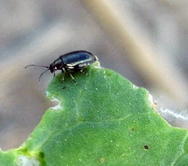Описание:
Мелкие прыгающие жуки длиной 2-3мм, надкрылья чёрные или синие. Бывают двуцветные чёрные с жёлтой извилистой продольной полосой. Яйца бледно-жёлтые, полупрозрачные, продолглвато-овальные. Лисинки длинной до 4мм, червеобразные, светлые или светло-жёлтые, с тремя парами ног.
Стадии развития:
Зимуют неполовозрелые жуки под растительными остатками, опавшими листьями, в верхних слоях почвы. Выходят из мест зимовки очень рано, как только оттает почва. На посевах рапса, одновременно с возобновлением вегетации возобновляют питание перезимовавшие личинки, внутри стеблей и черешках листьев.В начале и середине лета происходит откладка яиц в поверхностный слой почвы, где отродившиеся личинки питаются мелкими корешками, не причиняя существенного вреда растениям. Окукливание происходит в почве. Длительность развития яиц составляет 3-11 дней, личинок-16-13, куколок-7-17 дней. Вновь отродившиеся жуки питаются на листьях, а также на цветках и стручках рапса и др. семенных капустных культур. Развиваются в одном поколении.
Повреждения:
Питаются, нанося листьям характерные язваподобные повреждения. В случае повреждения точки роста растение гибнет. При массовом размножении за 2–3 дня вредитель может полностью уничтожить всходы.
Меры борьбы:
В осенний период в начале роста рапса, при превышении экономического порога вредоносности(3-5 особей/м²) разрешённым на рапсе инсектицидом против блошек или долгоносиков.
Рапсовый стеблевой скрытнохоботник (Ceuthorhynchus napi)

Описание:
Долгоносики длиной 2,5-3,2 мм, тело сверху свинцово-черное, покрыто серыми чешуйками, снизу в светлых чешуйках. Головотрубка подогнута между основаниями передних ног. Сзади щитка небольшое светлое пятно, лапки буро-красные. Яйца овальные, белые полупрозрачные, длиной 0,5-0,6 мм. Личинка С-образно согнутая, желтовато-белая, безногая, длиной 4-5 мм, с желто-бурой головой.
Стадии развития:
Зимуют жуки под растительными остатками в лесополосах, садах, вблизи посевов рапса. Весной пробуждаются и выходят на поверхность при среднесуточной температуре воздуха 6-7°С. Заселяют посевы рапса в жаркие, солнечные дни при среднесуточной температуре воздуха более 11-12°С. Перед откладкой яиц жукам необходимо дополнительное питание в течение 2-3 недель: В средних жилках листьев, черешках и стеблях и откладывают яйца по 3-4 шт. Эмбриональное развитие заканчивается через 4-10 дней, продолжитель-ность личиночной стадии – 20-30 дней. В одном растении может быть несколько десятков личинок. Поскольку яйцекладка растянута в течение месяца, личинки встречаются в стеблях рапса почти до уборки. Окукливаются в почве. Отродившиеся жуки выходят на поверхность, некоторое время питаются на крестоцветных и уходят на зимовку.Повреждения:
на рапсе долгоносики выгрызают ямки на черешках листьев и откладывают в них яйца. На листьях выгрызают круглые отверстия. Личинки прогрызают ходы в черешках листьев, продвигаясь к стеблю и по стеблю вниз до корневой шейки.В поврежденных растениях нарушается поступление воды и питательных веществ: в результа-те формируются небольшие стручки с мелкими семенами, потери урожая могут достигать 15-20 %, особенно в засуху.
Меры борьбы:
Оптимальный способ контроля численности жуков скрытнохоботников при заселении посевов рапса – использование желтых чашек-ловушек. На поле в краевой полосе устанавливают 2-4 чашки на высоте растений. В чашки наливают по 1 литру воды и добавляют несколько капель моющего средства (для ослабления поверхностного натяжения воды). Ежедневно во второй половине дня проверяют численность прилетевших вредителей. Ловушки используют до периода цветения. При попадании в одну ловушку за 3 дня весной ˃10 жуков стеблевого капустного скрытнохоботника, следует провести обработку. Также следует соблюдать пространственную изоляцию посевов рапса от прошлогодних и уничтожать крестоцветные сорняки
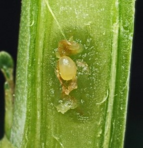
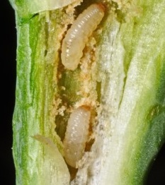
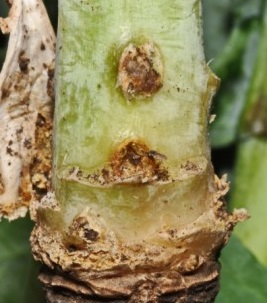
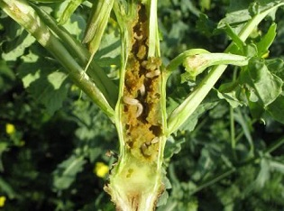
Семенной рапсовый скрытнохоботник (Ceuthorrhynchus assimilis)

Описание:
Жук длиной 2,0-2,5 мм, выглядит серым, т. к. густо покрыт светлыми чешуйками и волосками. Яйцо округлое, белое, 0,5 мм. Личинка длиной до 4 мм, беловатая с бурой головой, слегка изогнутая, без ног.
Стадии развития:
Зимуют жуки в почве и под растительными остатками. Весной появляются немного позже стеблевого капустного скрытнохоботника. С сорняков мигрируют на рапс в фазе бутонизации. Через 2-3 недели питания, начинается яйцекладка. Жуки откладывают яйца внутрь формирующегося стручка по 1-2 яйца. Личинки отрождаются через 5-7 дней Личиночная стадия продолжается 25-30 дней. В конце июня допитавшиеся личинки прогрызают в стручках выходные отверстия, падают на землю и окукливаются на глубине 2-4 см.В июле появляются жуки нового поколения, питаются на крестоцветных сорняках и уходят на зимовку. Высокой численности вредителя способствует сухая жаркая погода.Повреждения:
Взрослые жуки выгрызают ямки на цветоножках, бутонах и цветках. Самки прогрызают отверстия в стенках формирующихся стручков для откладки яиц, личинки выгрызают молодые семена. в стручок откладывает яйца и рапсовая галлица – в стручках одновременно питаются и ее личинки Поврежденные стручки преждевременно растрескиваются, при этом из них выпадают и неповрежденные семена
Меры борьбы:
Оптимальный способ контроля численности жуков скрытнохоботников при заселении посевов рапса – использование желтых чашек-ловушек. На поле в краевой полосе устанавливают 2-4 чашки на высоте растений. В чашкиналивают по 1 литру воды и добавляют несколько капель моющего средства (для ослабления поверхностного натяжения воды). Ежедневно во второй половине дня проверяют численность прилетевших вредителей. Ловушки используют до периода цветения. попадание в одну ловушку за 3 дня весной в период бутонизации ˃ 30 жуков семенного рапсового скрытнохоботника. Также следует соблюдать пространственную изоляцию посевов рапса от прошлогодних и уничтожать крестоцветные сорняки.
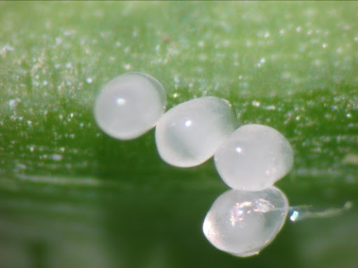
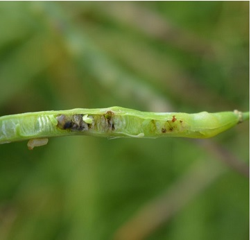
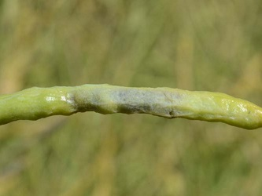
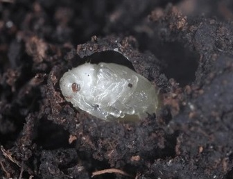
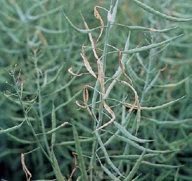
Рапсовый цветоед (Meligethes aenneus)
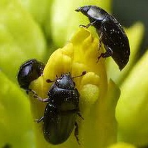Описание:
Длина тела имаго рапсового цветоеда составляет 2-3 мм. Сверху тело черного цвета с металлическим синим или зеленым блеском. Личинка имеет сероватый или желтоватый цвет, 3 пары грудных ног,длиной до 4 мм, покрыта мелкими черными бородавками с волосками.
Стадии развития:
Зимует имаго. Развивается до 2-3 поколений в год. Самки откладывают яйца в молодые цветочные почки. Плодовитость - 60-180 яиц. Эмбриональное развитие продолжается 10-14 дней. Личинки также начинают питаться внутренностью цветков, тычинками; живут 3-4 недели и имеют три линьки. Поздно отродившиеся личинки объедают также и стручки. В течение жизни могут менять несколько цветков. Окукливание происходит в поверхностном слое почвы. Благоприятные условия для развития вредителя 21-26°С и относительной влажности воздуха 70-80%. .
Повреждения:
Наибольшей вредоносностью обладают вышедшие из зимовки взрослые жуки (имаго), которые питаются пыльцой, тычинками и пестиками в бутонах. Массовое заселение посевов начинается при повышении среднесуточной температуры воздуха до +13…+14 градусов. Личинки рапсового цветоеда развиваются в бутонах крестоцветных и серьезно вредят, снижая урожай семян.
Меры борьбы:
При выявлении жуков первая обработка проводится в фазу бутонизации рапса - 1- 2 жука на одно растение. Вторая- в период массовой бутонизации и третья- перед цветением, при численности 4 жука/на растениие, одним из разрешённых инсектицидов.
Рапсовый листоед (Entomoscelis adonidis)
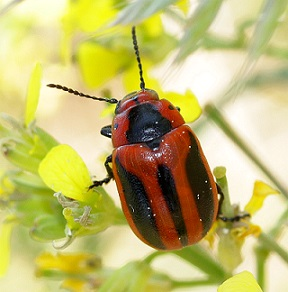Описание:
вредитель питается практически на всех видах семейства Капустные, однако из культурных предпочитает рапс, репу, горчицу. Тело жука удлиненно-яйцевидной формы в длину 7,5-10 мм; усики длиной почти с половину тела. Цвет тела чёрный; темя, бока грудного щитка и надкрылья желтовато-красные; на надкрыльях проходит чёрная продольная полоса.Личинка длиной до 14-15 мм, с выраженной головой и тремя парами ног, темно-коричневая сверху и желтовато-оранжевая снизу.
Стадии развития:
Зимует на стадии яйца в почве или под растительными остатками. Личинки отрождаются при температуре воздуха выше 7°С в апреле. Они объедают листья, оставляя только жилки. При температуре ниже 10° они прекращают питаться и прячутся на поверхности почвы. Стадия развития личинки включает 4 возраста, общая продолжительность которых 10-28 дней. Глубина залегания куколки зависит от влажности почвы. При температуре 20-22° и при влажности почвы 60-80% развитие куколки длится 8-10 дней. Молодые жуки появляются в начале лета и в течение 15-17 дней питаются на листьях и цветах крестоцветных. С наступлением жаркой погоды уходят в почву, где до августа — сентября находятся в состоянии диапаузы, после чего вновь выходят на поверхность и выедают незрелые семена в стручках крестоцветных сорняков, спариваются и откладывают яйца кучками по 20-80 штук на поверхности или в почве на глубине до 1 см. Самка откладывает яйца на поверхности почвы обычно при температуре 18-24 °С. Всего самка может отложить от 180 до 450 и более яиц. Отложив яйца, жуки отмирают.
Повреждения:
.
Меры борьбы:
Уничтожение сорняков и зяблевая вспашка. Химические обработки в весенний период при необходимости следует проводить с краёв поля или в очагах при выявлении 10% заселённых растений со средней численностью 6 экз/растение, используя один из разрешённых инсектицидов рекомендованных против долгоносиков.
Рапсовый пилильщик (Athalia rosae)
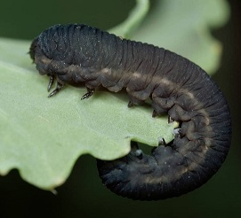Описание:
Взрослая особь, 6–8 мм длиной, имеет грудной и брюшной отдел желто-оранжевого цвета. Голова и боковые поверхности грудного отдела черные. На крыльях имеется черная канва. Яйцо крупное, овальное, прозрачное, стекловидное. Куколка желтоватая, помещена в бурый цилиндрической формы кокон.Ложногусеницы окрашены сначала в серо-зеленый цвет, потом становятся черно-серыми. 3 пары грудных ног, 8 пар ложных ног. Брюшная сторона более светлая, по бокам и на спинной стороне темно-бурые полосы. Тело морщинистое, усеянное мелкими бородавками.
Стадии развития:
Рапсовый пилильщик дает 2–3 поколения в год. Зимует ложногусеница в почве внутри кокона на глубине 2-5 см. Лёт взрослых особей первого поколения отмечается в мае - начале июня. Самка при помощи яйцеклада делает надрезы в листовой мякоти растений и откладывает в эти отверстия под эпидермис по одному яйцу. В местах откладки яиц наблюдаются легкие вздутия. Оптимальная температура для яйцекладки: +18– +20°С. При высоких температурах наблюдается очень быстрое развитие ложногусениц.
Повреждения:
Вредит ложногусеница. Питается мякотью листа, бутонами, цветами, молодыми стручками многих видов крестоцветных культур.
Меры борьбы:
Химические обработки озимого рапса проводят в сентябре-октябре против личинок рапсового пилильщика второго поколения при выявлении экономического порога вредоносности - более 2 личинок/растение, с использованием инсектицида рекомендованного против блошек.
Совка С черная (Amathes C-nigrum)
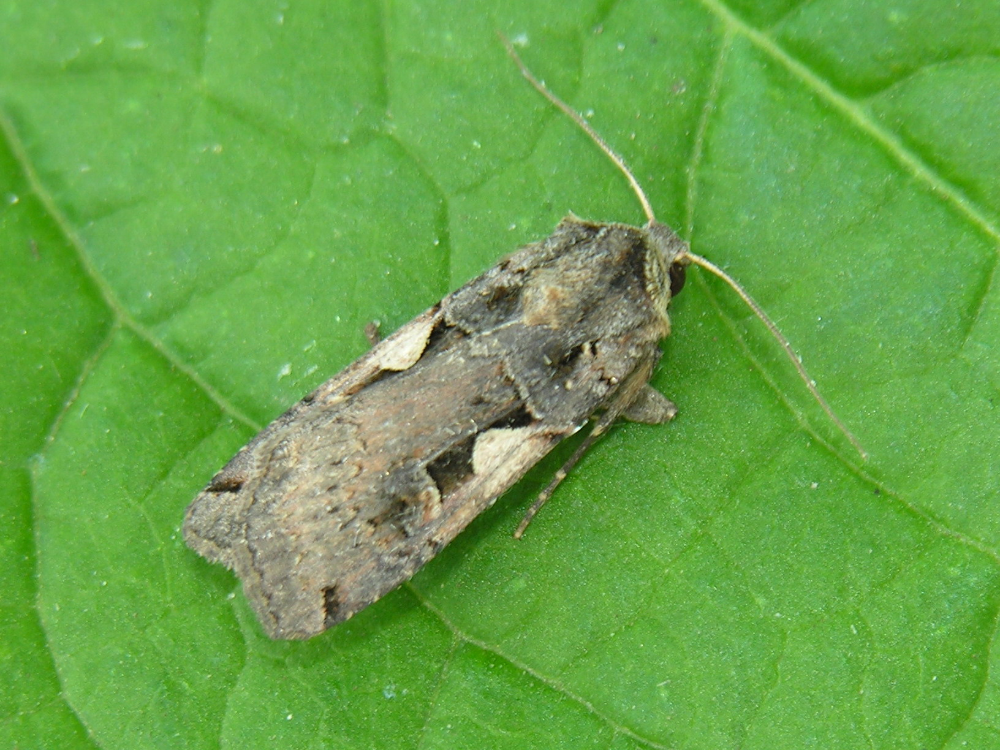Описание:
Имаго. Бабочка, размах крыльев 36–48 мм. Цвет передних крыльев варьирует от синевато-стального до черно-коричневого. Кремово-белая полоса на переднем крыле посередине расширяется и принимает вид светлого треугольного пятна с черным окаймлением снизу в форме буквы «С» латинского алфавита. Задние крылья беловатые. Яйцо сероватое или желтоватое, шаровидное с неясно выраженным бугорком и 28–30 радиальными ребрышками. Диаметр 0,6–0,9 мм. Личинка (гусеница). Длина 28–45 мм. Окраска изменчивая, варьирует от розовато-желтой до красновато-бурой, часто зеленоватой или темно-серой. На спинной стороне хорошо просматриваются косые темные штрихи. Дыхальца светлые с темным ободком. Боковая полоса снизу имеет темное окаймление. Наддыхальцевая полоса всегда с темной резкой нижней границей. Поддыхальцевая полоса с розоватым налетом, светлая. Куколка: длина 15–17 мм. Покровы коричневого цвета. На кремастере расположены два загнутых на конце отростка и четыре щетинки (две по бокам и две со стороны спины). По бокам кремастера хорошо заметны два бугорка. Личинка-(гусеница) проходит шесть возрастов развития. Продолжительность стадии 30 суток. В старших возрастах – прячутся днем на поверхности почвы и под растительными остатками. Питаются ночью, оставляя от листовой пластинки центральную жилку. Второе поколение гусениц питается на дикорастущей и сорной растительности и особого вреда не наносит.Зимуют гусеницы последних возрастов (5-го и 6-го). Весной они продолжают питание сначала на сорняках, а позднее на всходах культурных растений. Окукливание происходит в конце апреля-мае.
Стадии развития:
Имаго. Бабочки первого поколения появляются в мае и летают до середины июля. Им необходимо дополнительное питание на цветах малины, жимолости, черной смородины, подсолнечника и других растений. Второе поколение бабочек наблюдается в августе – сентябре. Интенсивность второго лета во много раз выше. Самка откладывает яйца по одному или кучками по 18–40 штук на почву или на нижнюю сторону листьев. Средняя плодовитость 800–950 штук, максимальная 1450. Эмбрион заканчивает развитие за шесть дней. Личинка: (гусеница) проходит шесть возрастов развития. Продолжительность стадии 30 суток. Зимуют гусеницы последних возрастов (5-го и 6-го). Весной они продолжают питание на озимом рапсе. Окукливание наблюдается в конце апреля-мае. Куколка развивается в рыхлом коконе в поверхностном слое почвы часто сразу под растительными остатками. Длительность развития 12–30 дней. Иногда отмечается зимовка куколок. Имаго: лет первого поколения – в мае, второго – августе-сентябре. За вегетационный период развивается два поколения.
Повреждения:
Вредят гусеницы, преимущественно старших возрастов. Перезимовавшие гусеницы весной повреждают всходы сахарной свеклы, рассаду капусты, редис, лук, многолетние травы и многие другие культуры. Объедают всходы, верхушки побегов и листья. Гусеницы первого поколения повреждают рапс, овощные культуры, гречиху, картофель, свеклу, клевер, люцерну, горох, хлопчатник, кукурузу и различные зерновые, лен-долгунец, табак, огурцы, землянику, клюкву, лекарственные растения, подсолнечник, сою, виноградную лозу, малину, крыжовник, плодовые культуры и многие другие культурные и дикорастущие растения, питаются открыто на нижней части листьев, скелетируя их. Гусеницы второго поколения питаются на сорной растительности, и на озимом рапсе. В старших возрастах – прячутся днем на поверхности почвы и под растительными остатками. Питаются ночью, оставляя от листовой пластинки центральную жилку.
Меры борьбы:
Химические обработки озимого рапса осенью проводят при выявлении более 3х гусениц на заселённом растении, используя один из инсектицидов, разрешённых на культуре, согласно Государственного реестра. Весной с повышением температуры воздуха выше10-12 С, при возобновлении питания зимующих гусениц на посевах озимого рапса, на отдельных участках, где численность гусениц превысит ЭПВ 3экз/м.кв, также следует провести хим.обработки.
Опылённая капустная тля (Brevicorine brassicae)
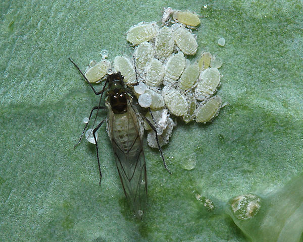Описание:
Бескрылая партеногенетическая самка длиной 1,9-2,3 мм. Взрослая особь- крылатая живородящая самка.
Стадии развития:
Зимует на стадии яйца на нижней стороне листьев или на стеблях. В марте начинается отрождение. Самки-основательницы дают начало партеногенетическим живородящим самкам, которые формируют колонии. Время от времени отрождаются личинки, которые развиваются в крылатых самокрасселительниц. Колонии становятся наиболее вредоносными в период образования стручков на озимом рапсе. В середине лета отрождаются личинки, которые развиваются в крылатых самок-расселительниц. Они обеспечивают заселение сначала дикорастущих растений, а затем новых посевов. Осенью часть личинок превращается в самок-полоносок, которые отрождают личинок обоих полов (самок и самцов). Самки после спаривания откладывают зимующие яйца. Летние живородящие самки могут выживать в условиях мягких зим и отрождать крылатых особей, которые могут начать раннее заселение и стать причиной вспышки численности вредителя. .
Повреждения:
В осенний период на озимом рапсе питание тли продолжается до наступления холодной погоды, поражённые листья обесцвечиваются, на них появляются жёлтые или красные пятна, растение застаивается, слабо зимует.
Меры борьбы:
Уничтожение сорной растительности и послеуборочных растительных остатков.Химические обработки проводят при обнаружении двух колоний на 1 м.кв., и соотношении афидофаг: тля менее1:30, следует проводить краевые обработки посевов, а при необходимости и сплошные, используя разрешенный инсектицид. В большинстве случаев обработки проведённые против комплекса вредителей, сдерживают развитие тли.